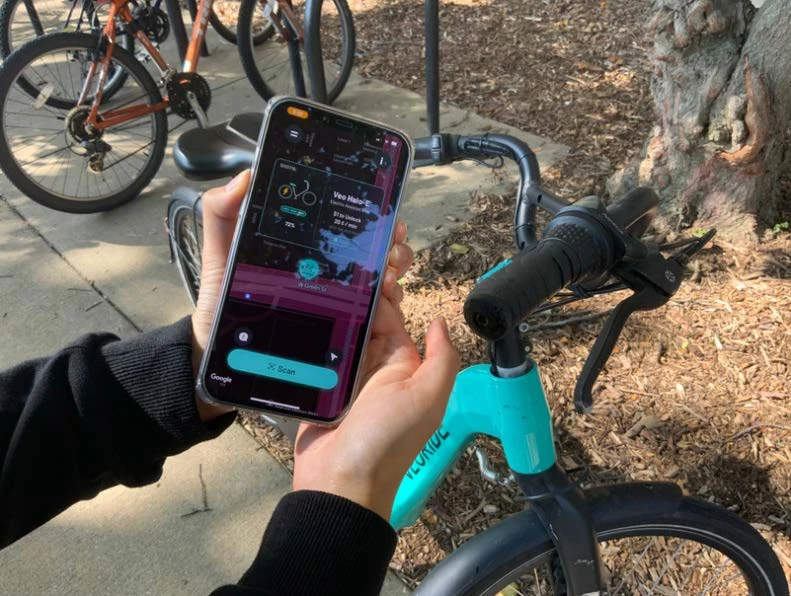
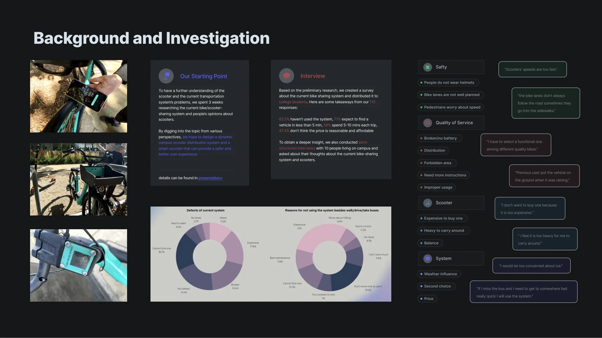
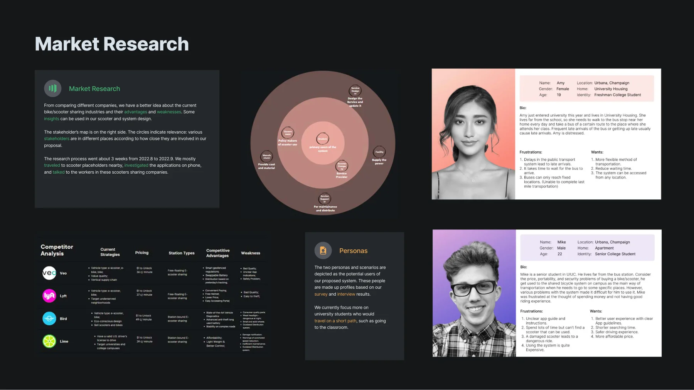
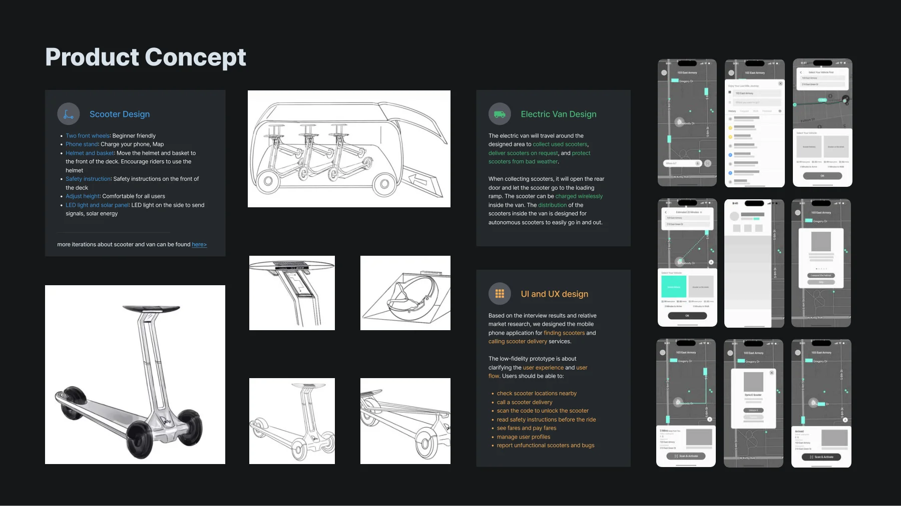

PROJECT 04 / 服务设计 · 用户研究2022
Dymo
从找一辆车，重新思考一段出行。
结合共享滑板车、动态配送车辆与移动应用，为校园最后一公里提出更连贯的服务体验。

- 我的职责
- 算法可行性分析、整体用户体验设计
- 方法与工具
- 用户访谈 / 问卷 / 文献研究 / 低保真原型
- 项目形式
- 校园出行系统提案
MY CONTRIBUTION
我在项目中做了什么。
参与团队的校园出行研究，重点评估调度算法的实现方向，并设计找车、配送、解锁、骑行与反馈的整体用户流程。
Junting (David) Zhu、Zezhi (Jimmy) Guo、Yuhe (Ruby) Cui01 / RESEARCH
先理解出行里的不确定性。
团队收集 110 份问卷，并与 10 位校园居民进行半结构化访谈。研究关注车辆分布、可用性、价格、安全和天气等问题；这些是本项目样本的发现，不是对所有校园用户的普遍结论。

02 / SYNTHESIS
连接用户、运营方与城市环境。
市场比较、利益相关者地图与人物画像帮助团队界定服务对象。随后整理 28 篇相关文献，把产品设计、骑行行为、算法与管理机制放进同一张研究图谱。

03 / PROPOSAL
把车辆与应用，放进同一个服务流程。
方案提出共享滑板车、承担回收与配送的电动厢车，以及找车与呼叫配送的手机应用。本人着重评估算法与体验流程。自动配送、无线充电等属于设计提案，现有材料不能证明已部署或实现。

团队设计：Junting Zhu、Zezhi Guo、Yuhe Cui。调研、概念图和原型为团队成果。
按所提供的作品集呈现为研究与设计提案；论文发表状态未在本次材料中独立核实。
下载原作品集 PDF ↓